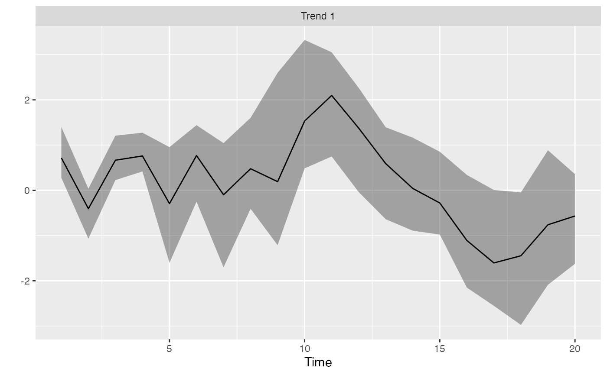

Rotate the trends from a DFA
rotate_trends(fitted_model, conf_level = 0.95, invert = FALSE)
| fitted_model | Output from |
|---|---|
| conf_level | Probability level for CI. |
| invert | Whether to invert the trends and loadings for plotting purposes |
set.seed(42) s <- sim_dfa(num_trends = 1, num_years = 20, num_ts = 3) # only 1 chain and 800 iterations used so example runs quickly: m <- fit_dfa(y = s$y_sim, iter = 50, chains = 1)#> #> SAMPLING FOR MODEL 'dfa' NOW (CHAIN 1). #> Chain 1: #> Chain 1: Gradient evaluation took 3.5e-05 seconds #> Chain 1: 1000 transitions using 10 leapfrog steps per transition would take 0.35 seconds. #> Chain 1: Adjust your expectations accordingly! #> Chain 1: #> Chain 1: #> Chain 1: WARNING: There aren't enough warmup iterations to fit the #> Chain 1: three stages of adaptation as currently configured. #> Chain 1: Reducing each adaptation stage to 15%/75%/10% of #> Chain 1: the given number of warmup iterations: #> Chain 1: init_buffer = 3 #> Chain 1: adapt_window = 20 #> Chain 1: term_buffer = 2 #> Chain 1: #> Chain 1: Iteration: 1 / 50 [ 2%] (Warmup) #> Chain 1: Iteration: 5 / 50 [ 10%] (Warmup) #> Chain 1: Iteration: 10 / 50 [ 20%] (Warmup) #> Chain 1: Iteration: 15 / 50 [ 30%] (Warmup) #> Chain 1: Iteration: 20 / 50 [ 40%] (Warmup) #> Chain 1: Iteration: 25 / 50 [ 50%] (Warmup) #> Chain 1: Iteration: 26 / 50 [ 52%] (Sampling) #> Chain 1: Iteration: 30 / 50 [ 60%] (Sampling) #> Chain 1: Iteration: 35 / 50 [ 70%] (Sampling) #> Chain 1: Iteration: 40 / 50 [ 80%] (Sampling) #> Chain 1: Iteration: 45 / 50 [ 90%] (Sampling) #> Chain 1: Iteration: 50 / 50 [100%] (Sampling) #> Chain 1: #> Chain 1: Elapsed Time: 0.00271 seconds (Warm-up) #> Chain 1: 0.005034 seconds (Sampling) #> Chain 1: 0.007744 seconds (Total) #> Chain 1:#> Warning: There were 1 chains where the estimated Bayesian Fraction of Missing Information was low. See #> http://mc-stan.org/misc/warnings.html#bfmi-low#> Warning: Examine the pairs() plot to diagnose sampling problems#> Warning: The largest R-hat is 2.1, indicating chains have not mixed. #> Running the chains for more iterations may help. See #> http://mc-stan.org/misc/warnings.html#r-hat#> Warning: Bulk Effective Samples Size (ESS) is too low, indicating posterior means and medians may be unreliable. #> Running the chains for more iterations may help. See #> http://mc-stan.org/misc/warnings.html#bulk-ess#> Warning: Tail Effective Samples Size (ESS) is too low, indicating posterior variances and tail quantiles may be unreliable. #> Running the chains for more iterations may help. See #> http://mc-stan.org/misc/warnings.html#tail-ess#> Inference for the input samples (1 chains: each with iter = 25; warmup = 12): #> #> Q5 Q50 Q95 Mean SD Rhat Bulk_ESS Tail_ESS #> x[1,1] -1.0 -1.0 -1.0 -1.0 0.0 1.13 6 13 #> x[1,2] 0.2 0.2 0.2 0.2 0.0 1.48 5 13 #> x[1,3] -1.1 -1.1 -1.1 -1.1 0.0 1.87 4 13 #> x[1,4] -1.3 -1.3 -1.3 -1.3 0.0 1.87 4 13 #> x[1,5] 0.1 0.1 0.1 0.1 0.0 2.06 4 13 #> x[1,6] -1.0 -1.0 -1.0 -1.0 0.0 2.06 4 13 #> x[1,7] -0.1 -0.1 -0.1 -0.1 0.0 2.06 4 13 #> x[1,8] -1.5 -1.5 -1.4 -1.5 0.0 2.06 4 13 #> x[1,9] -0.7 -0.7 -0.7 -0.7 0.0 2.06 4 13 #> x[1,10] -1.9 -1.9 -1.9 -1.9 0.0 2.06 4 13 #> x[1,11] -2.5 -2.5 -2.5 -2.5 0.0 2.06 4 13 #> x[1,12] -2.0 -2.0 -2.0 -2.0 0.0 2.06 4 13 #> x[1,13] -1.1 -1.1 -1.1 -1.1 0.0 2.06 4 13 #> x[1,14] -0.5 -0.5 -0.5 -0.5 0.0 1.48 4 13 #> x[1,15] 0.1 0.1 0.1 0.1 0.0 1.13 7 13 #> x[1,16] 0.9 0.9 0.9 0.9 0.0 1.58 8 13 #> x[1,17] 1.9 1.9 1.9 1.9 0.0 1.06 9 13 #> x[1,18] 2.0 2.0 2.0 2.0 0.0 1.45 5 13 #> x[1,19] 1.6 1.7 1.7 1.7 0.0 1.45 4 13 #> x[1,20] 2.3 2.3 2.3 2.3 0.0 1.58 4 13 #> Z[1,1] 1.4 1.4 1.4 1.4 0.0 1.58 4 13 #> Z[2,1] 23.8 28.6 32.6 28.4 3.0 2.06 3 13 #> Z[3,1] -1.9 -1.6 -1.4 -1.6 0.2 2.06 4 13 #> log_lik[1] -1.6 -1.6 -1.6 -1.6 0.0 2.06 3 13 #> log_lik[2] -274.5 -202.5 -136.1 -203.2 47.0 2.06 3 13 #> log_lik[3] -2.0 -1.8 -1.6 -1.8 0.1 2.06 4 13 #> log_lik[4] -1.4 -1.3 -1.3 -1.3 0.0 2.06 3 13 #> log_lik[5] -13.9 -10.9 -7.7 -10.9 2.1 2.06 3 13 #> log_lik[6] -1.3 -1.3 -1.3 -1.3 0.0 2.06 3 13 #> log_lik[7] -1.6 -1.6 -1.5 -1.6 0.0 2.06 3 13 #> log_lik[8] -321.0 -234.7 -156.7 -235.8 55.9 2.06 3 13 #> log_lik[9] -1.8 -1.6 -1.5 -1.6 0.1 2.06 4 13 #> log_lik[10] -1.8 -1.8 -1.8 -1.8 0.0 1.87 4 13 #> log_lik[11] -441.1 -320.6 -211.6 -322.1 78.0 2.06 3 13 #> log_lik[12] -3.8 -3.1 -2.7 -3.1 0.3 2.06 3 13 #> log_lik[13] -1.3 -1.3 -1.3 -1.3 0.0 2.06 3 13 #> log_lik[14] -3.7 -3.3 -2.8 -3.3 0.3 2.06 3 13 #> log_lik[15] -1.4 -1.4 -1.4 -1.4 0.0 2.06 3 13 #> log_lik[16] -1.4 -1.4 -1.4 -1.4 0.0 2.06 3 13 #> log_lik[17] -261.8 -189.7 -124.5 -190.7 46.8 2.06 3 13 #> log_lik[18] -2.6 -2.3 -2.1 -2.3 0.2 2.06 3 13 #> log_lik[19] -1.3 -1.3 -1.3 -1.3 0.0 2.06 3 13 #> log_lik[20] -2.5 -2.0 -1.7 -2.0 0.3 2.06 3 13 #> log_lik[21] -1.4 -1.4 -1.4 -1.4 0.0 2.06 4 13 #> log_lik[22] -3.1 -3.0 -2.9 -3.0 0.1 2.06 3 13 #> log_lik[23] -553.1 -399.1 -261.2 -401.5 99.3 2.06 3 13 #> log_lik[24] -3.5 -2.9 -2.4 -2.9 0.4 2.06 3 13 #> log_lik[25] -1.5 -1.5 -1.5 -1.5 0.0 2.06 3 13 #> log_lik[26] -138.9 -99.4 -65.5 -100.4 25.0 2.06 3 13 #> log_lik[27] -2.6 -2.3 -2.1 -2.3 0.1 2.06 3 13 #> log_lik[28] -1.8 -1.8 -1.8 -1.8 0.0 2.06 3 13 #> log_lik[29] -971.6 -699.8 -458.4 -704.6 174.7 2.06 3 13 #> log_lik[30] -8.1 -6.4 -5.3 -6.5 0.9 2.06 3 13 #> log_lik[31] -2.0 -2.0 -2.0 -2.0 0.0 2.06 3 13 #> log_lik[32] -1645.8 -1195.9 -789.5 -1202.3 291.4 2.06 3 13 #> log_lik[33] -12.0 -9.4 -7.6 -9.4 1.5 2.06 3 13 #> log_lik[34] -1.5 -1.5 -1.5 -1.5 0.0 1.71 4 13 #> log_lik[35] -982.2 -706.3 -459.4 -710.6 178.1 2.06 3 13 #> log_lik[36] -7.6 -6.0 -4.9 -6.0 0.9 2.06 3 13 #> log_lik[37] -1.5 -1.5 -1.5 -1.5 0.0 2.06 3 13 #> log_lik[38] -289.0 -206.9 -135.5 -208.7 52.4 2.06 3 13 #> log_lik[39] -3.0 -2.5 -2.3 -2.5 0.2 2.06 3 13 #> log_lik[40] -1.4 -1.4 -1.3 -1.4 0.0 2.06 3 13 #> log_lik[41] -82.3 -59.7 -40.5 -60.3 14.3 2.06 3 13 #> log_lik[42] -1.4 -1.4 -1.4 -1.4 0.0 1.45 5 13 #> log_lik[43] -1.6 -1.6 -1.6 -1.6 0.0 2.06 3 13 #> log_lik[44] -6.0 -4.8 -3.4 -4.8 0.9 2.06 3 13 #> log_lik[45] -1.6 -1.6 -1.6 -1.6 0.0 1.19 5 13 #> log_lik[46] -1.3 -1.3 -1.3 -1.3 0.0 2.06 3 13 #> log_lik[47] -236.0 -173.2 -113.4 -173.3 41.5 2.06 3 13 #> log_lik[48] -3.9 -3.4 -3.0 -3.4 0.3 2.06 3 13 #> log_lik[49] -1.5 -1.5 -1.5 -1.5 0.0 2.06 4 13 #> log_lik[50] -861.5 -620.8 -398.1 -622.7 157.2 2.06 3 13 #> log_lik[51] -8.4 -6.8 -5.6 -6.8 0.9 2.06 3 13 #> log_lik[52] -2.2 -2.2 -2.1 -2.2 0.0 2.06 3 13 #> log_lik[53] -1012.5 -732.2 -472.8 -734.4 183.2 2.06 3 13 #> log_lik[54] -8.4 -6.6 -5.4 -6.7 0.9 2.06 3 13 #> log_lik[55] -1.8 -1.8 -1.7 -1.8 0.0 1.47 4 13 #> log_lik[56] -758.7 -554.9 -364.5 -555.8 133.8 2.06 3 13 #> log_lik[57] -5.0 -4.0 -3.3 -4.0 0.5 2.06 3 13 #> log_lik[58] -3.2 -3.1 -3.0 -3.1 0.1 2.06 3 13 #> log_lik[59] -1381.7 -1005.6 -656.0 -1007.9 246.6 2.06 3 13 #> log_lik[60] -6.8 -5.1 -4.0 -5.2 0.9 2.06 3 13 #> psi[1] 0.5 0.5 0.5 0.5 0.0 1.19 8 13 #> xstar[1,1] 0.3 1.9 3.1 1.7 1.1 1.14 10 13 #> sigma[1] 1.4 1.5 1.5 1.5 0.0 2.06 3 13 #> lp__ -10656.9 -7766.0 -5131.8 -7798.8 1877.9 2.06 3 13 #> #> For each parameter, Bulk_ESS and Tail_ESS are crude measures of #> effective sample size for bulk and tail quantities respectively (an ESS > 100 #> per chain is considered good), and Rhat is the potential scale reduction #> factor on rank normalized split chains (at convergence, Rhat <= 1.05).